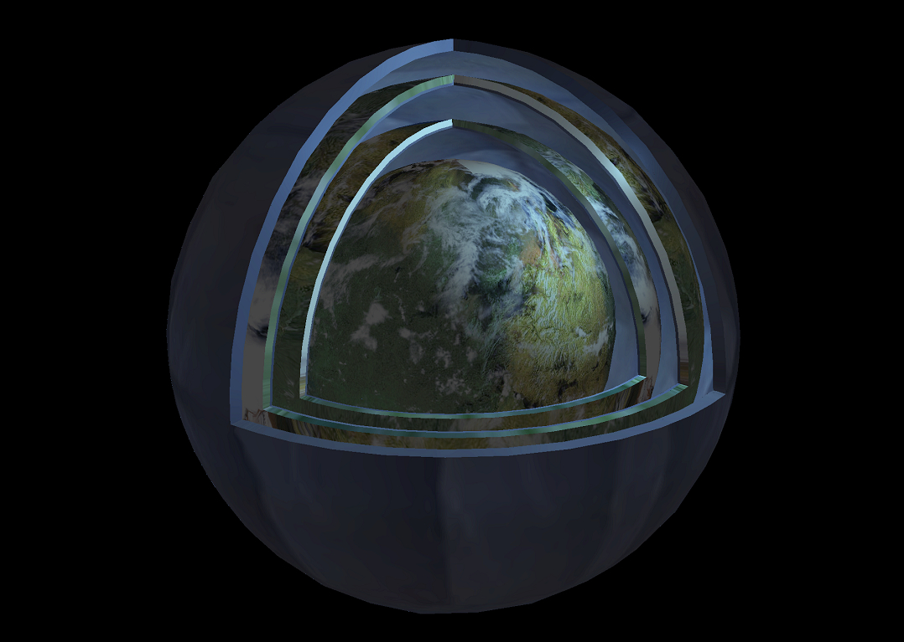

An introduction
As humanity reaches its grasp into the stars and if indeed our progress is not stunted by ecological disaster, we may very well advance to become a Kardashev type 1 civilisation, harnessing the full energy potential of our planet and beginning the resource extraction of our nearest stellar objects. Becoming such a civilisations presents our descendants with great possibilities in the realm of architecture and engineering the cruel chains of gravity are thrown off. It presents us with the possibility of megastructures.
Megastructures
Megastructures refer to large-scale artificial engineering projects, typically of gargantuan size that are constructured for various purposes, such as space habitation or energy generation. They are characterised for pushing the limits of engineering, construction capabilities, and our present understanding of the universe. As one might extrapolate from the present state of affairs on our planet, humanity has yet to construct any megastructures and as such they are contained in the realm of speculation and science fiction, where they are envisioned as constructs built in space, around stars, and/or within planetary systems. Let us explore some example of such monumental undertakings.
Dyson Sphere
The Dyson Sphere is a classic of science fiction. A structure which would completely encompass a star and allows its entire energy output to be utilised by an advanced civilisation. Its construction would demand an astronomical amount of material and highly sophisticated construction methods and techniques to build the various parts of the shell, ferry them to a stable orbit around the star, and to ensure their safe assembly. Another rather popular version of the Dyson Sphere is the so called Dyson Swarm.
Dyson Swarm

The Dyson Swarm is a more distributed and feasible cousin of the gargantuan Sphere, relinquishing a fully enclosing structure in favor of vast numbers of individual solar-collecting satellites or habitats in orbit around a star.
Compared to a Sphere, a Swarm would mitigate many of the the structural challenges via such satellites - they would be significantly smaller and lighter, requiring fewer materials. These "swarmites" could transfer collected energy via lasers or mirrors to waiting space stations and habitats and even act as propulsion was for solar sail driven spacecraft.
Ringworld

As the name would suggest a ringworld is a colossal ring-shaped artificial construct that encircles a star at a desired orbit. It would provide habitable inner surface with controlled atmosphere and gravity generated through centrifugal force. One of the greatest engineering and construction challenges presented by a ringworld, besides the absurd material requirement typical for megastructures, involves balancing the structure's centrifugal force with the gravitational pull toward the star.
Orbital Ring

An orbital ring is a massive, circular structure encircling a celestial object, most often a planet, at a specific altitude and typically in a geostationary orbit, which depending on its purpose could be either stationary or rotating.
Among many applications, it could be utilised as a space elevator and as a hub for interplanetary travel and exploration, satellite deployment, energy harvesting via solar panels, and as an orbital space vessel manufacturing facility. Of course, ensuring the structural integrity and stability of such a structure demands materials with the necessary strength-to-weight ratios and the capability of withstanding the stress caused by the planet's gravity.
Shellworld

Shellworlds refer to a speculative concept often found in science fiction that involves constructing artificial habitats resembling gigantic shells or layers around a celestial body, be it a star or a planet, with the layer's outer surfaces being habitable, allowing for vast, concetric living spaces. Imagining a shellworld as a matryoshka doll may help one visualize it better.